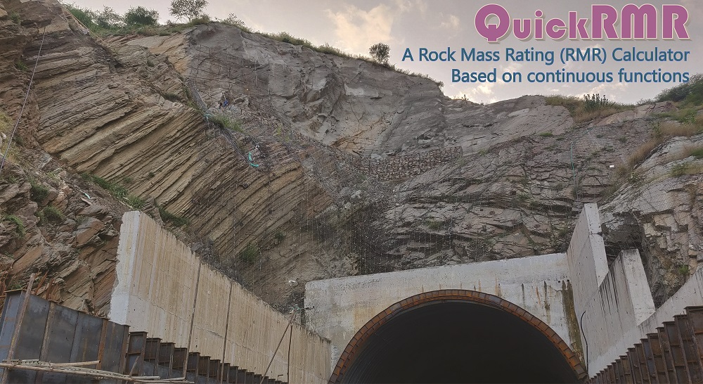

QuickRMR
Rock mass conditions at a twin tunnel portal with diverse lithological and structural characteristics. The portal slopes have been been stabilized with support systems. (Photo credit: Dr. Harsh K. Verma, Principal Scientist, CSIR-CIMFR)
'QuickRMR' is a windows computer program and has been developed to
calculate both RMR89 and RMR14 using the new continuous functions
proposed by Kundu et al. (2020). This computer program aims at making
the RMR determination automatic, easy and convenient. The program is
freely available and is distributed under an open-source license
(GNU General Public License 3.0). The user
can calculate, store, update and delete RMR data for several locations
and finally can export ratings of each parameter for all location to
an MS Excel file. The application has been written in Visual C#.
The software can be installed on a Windows Operating System preferably on Windows 7 or higher.
Other requirements:
-
.NET Framework 4.0
SQL Server Express LocalDB 2017
Microsoft Access Database Engine
Downloads
QuickRMR is an open source licensed (GNU General Public License 3.0) software which can can currently run on Windows OS. The software is programmed in Visual Studio using c# language.
- Download the .zip file containing the software here: QuickRMR_win
- Download the visual studio codes as a .zip file here: QuickRMR_VScode
- Go to the github page containing repository here: QuickRMR_git_repository
Cite the software as:
Kundu, J., Sarkar, K., Singh, A.K., & Singh, T.N. (2020). QuickRMR beta. A Rock Mass Rating calculator based on continuous functions. https://jkundu.com/quickrmr (download date).
Cite the article for continuous functions used in the software as:
Kundu, J., Sarkar, K., Singh, A.K., & Singh, T.N. (2020) Continuous functions and a computer application for rock mass rating. Int. J. Rock Mech. Min. Sci.
After successful installation, upon launching the program, the window should look like below image. The user can claculate RMR89 and RMR14 by clicking respective button.
User Interface of QuickRMR
The below figure introduces all the features in RMR89 Interface.
User Interface of QuickRMR->RMR89
And similar features are available in QuickRMR->RMR14.
User Interface of QuickRMR->RMR14
For details on the software operation, follow the user guide below.
Hope you enjoy using the software! I would love to receive your feedback at email@jkundu.com. Your comments/suggestions are valuable to make it more convenient and error free.